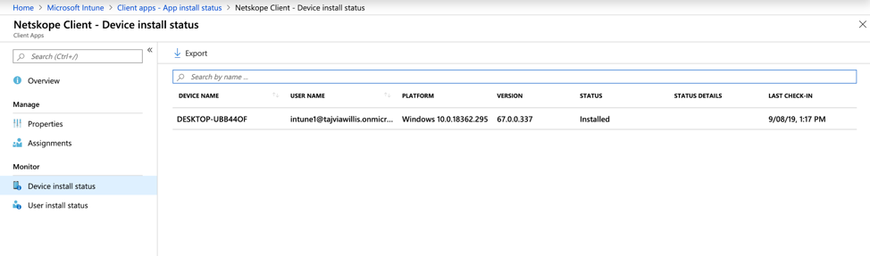

Deploy Netskope Client with Intune
Before deploying the client on end-user devices, you must on-board or add users into Netskope. You can add users using the Directory Importer, or SCIM integration.
Note
The following steps assume that the target devices are Windows machines, either joined to Active Directory or Azure AD.
Intune Deployment Procedure
Ensure the device is enrolled in Intune
Log in to the Azure Portal
Access the Intune Management Page
Under Manage, select Client Apps

Under Manage, select Apps
Select Add
For App Type, select “Line-of-business app”
Upload the NSClient.msi to App Package File and select OK
Under App Information
Provide a description
Publisher Name
Set Ignore App Version to Yes if you intend to allow the Netskope client to auto-update
Select the appropriate category
Select No under Display this as a featured app in the Company Portal
Information and Privacy URL are optional values
Under Command-Line Arguments:
token=<organization id> host=addon-<tenant-name>.goskope.com mode=peruserconfig(Use peruserconfig only for multi-user environments)autoupdate=on(only applicable if you want the client to auto-update)/qn
Select OK
Select the appropriate Scope Tag
Select Add.
Wait for the app to upload and finalize
Select the Netskope Client from the app list
Select Assignments > Add Group
For Assignment Type, select Required
Select the appropriate groups that should be included or excluded
Select Save
You can monitor the installation process from Intune. Go to Client Apps > Install Status > Search for “Netskope” > Device Install Status

Un-installing Clients
To set up un-installion script for Netskope client in Windows devices follow the procedure as described in this section:
Note
This procedure is applicable only for devices that are AD joined. Also, during subsequent installation, un-assign this app to avoid un-installation of the newly installed Clients
Login to your Intune admin console and select Device Configuration.
In the Device Configuration page, click Scripts option in the left hand side.
To start adding uninstallation script, click the Add button and select Windows 10.

In the Add Powershell Script page, enter a Name for the script configuration and click Next to continue.

In the script settings page, select the powershell script from your computer. Enter the following command in the powershell script.
$product_identifier= Get-WmiObject -Class Win32_Product | where Name -eq "Netskope Client" | select -expandproperty IdentifyingNumber msiexec /uninstall $product_identifier /qn /l*v <path-to>\nscuninstall.log
Set the following options for the script
Run this script using the logged on credentials - YES
Enforce script signature check - NO
Run script in 64 bit PowerShell Host - YES

Click Next to continue.
In the Assignment step, assign the user groups for this script. Netskope Client in all devices of the assigned user group will be uninstalled.
In the last step, review your selections and click Add to complete the procedure.